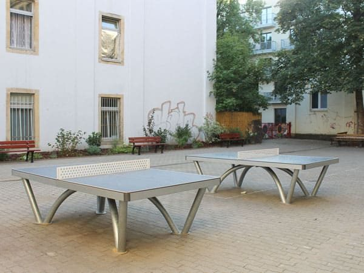

MINT
Roboter „Klaus" gewinnt Wettbewerb
Zwei Monate Schraubarbeit, ein Kabel zu viel – und am Ende der erste Platz. Die Geschichte hinter dem Pokal.
Willkommen im Semper Magazin: Wir – die Schülerredaktion der Semper Oberschule Dresden – erzählen, wie unser Alltag wirklich aussieht. Ohne Werbesprache. Mit echten Geschichten.
Zwischen 8 und 15:30 Uhr passiert hier alles: Chemie, die glüht, Bandproben, die man im Flur hört, Pausen auf dem Schulhof der alten Mädchenschule. Wir haben dokumentiert, was dieses Haus besonders macht.
Die Semper Oberschule ist eine private Oberschule mit MINT-Schwerpunkt, Kunst, Musik und Theater – und einem Team aus 30 festangestellten Lehrkräften plus Erziehern, Sozialarbeitern, Medienpädagogen und einer Praxisberaterin. Aber Zahlen erzählen nur die halbe Geschichte. Die andere Hälfte findest du in unseren Reportagen.
Weiterlesen in der Reportage
Kleine Klassen mit maximal 24 Schülern, Kleingruppen von höchstens 12 – und Fachkabinette, in denen man anfassen darf, worüber man lernt.
Lehrer, die dich mit Namen kennen. Sozialarbeiter, die Zeit haben. Und eine Schulband, die man bis auf den Hof hört.
Robotik-Wettbewerbe, Italien-Austausch, Projektwochen, Demokratie-Week: Hier wird nicht nur gelernt, hier passiert was.
Berufsorientierung mit Praktika, Werkstatttagen und Potenzialanalyse – plus drei Fremdsprachen zur Wahl: Französisch, Spanisch, Italienisch.
Zwei Monate Schraubarbeit, ein Kabel zu viel – und am Ende der erste Platz. Die Geschichte hinter dem Pokal.

Hinter den Kulissen der Theater-AG: vergessene Requisiten, stille Helden, große Momente.

Die Schulband probt im Musikraum – und man hört sie bis auf den Schulhof. Ein kleiner Mitschnitt.



Genaue Daten stehen, sobald sie feststehen, auf der offiziellen Schul-Seite.
Die ganze Schule singt, die Band spielt, die Aula riecht nach Plätzchen. Termin folgt.
Drei Tage Schnee mit der ganzen Schule: Ski, Rodeln, Abendspuk in der Jugendherberge.
Zukünftige Fünftklässler begleiten einen Tag lang eine echte Klasse. Anmeldung über die offizielle Schul-Seite.
Band-Auftritte, Kuchenstand, offene Klassenzimmer. Auch Sie sind eingeladen!
„An meiner alten Schule war ich eine von 30 im Raum. Hier kennt mich mein Mathelehrer mit Vornamen – und weiß, dass ich Kopfrechnen hasse, aber Zeichnen liebe."– Nele, 8. Klasse
Beim Tag der offenen Tür (voraussichtlich November 2027) führen wir persönlich durchs Haus. Verbindliche Anmeldeinfos gibt es bei der Schule direkt.